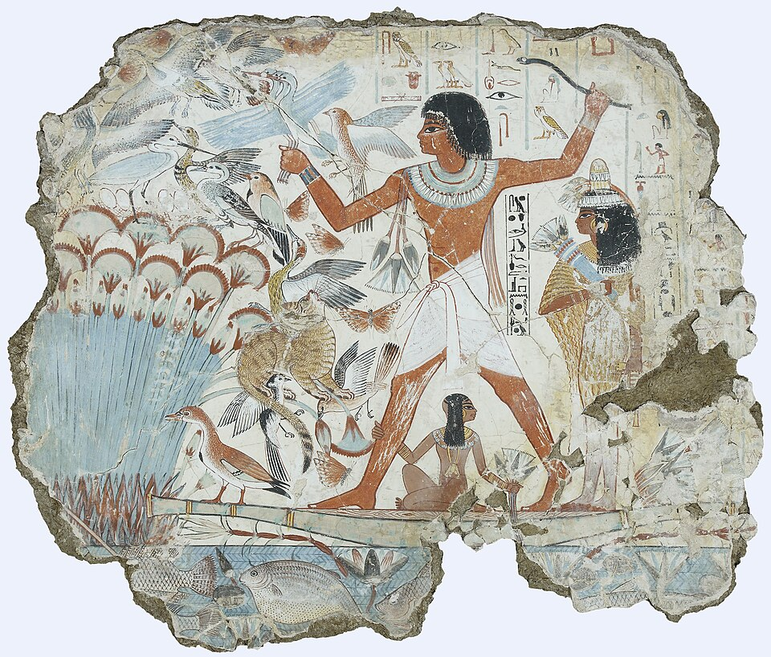

1
La boîte à outils théorique
La fiche notions définit chaque concept, le rattache à l'œuvre où il est formulé et indique ce que l'on peut en faire dans une copie.
André Malraux, Les Voix du silence · Ernst Gombrich, L'Art et l'Illusion et Histoire de l'art
Le langage de l'art, l'art du langage
« La vie est courte, l’art est long. » Hippocrate, Aphorismes, Ve siècle av. J.-C.
Avant de commencer : comment vous sentez-vous face à ce cours ?
Un tableau ne dit pas un mot. Pourtant, depuis des siècles, écrivains, historiens et philosophes remplissent des bibliothèques pour le faire parler. Ce cours vous place au cœur d'un paradoxe que vous retrouverez dans toutes les études littéraires : comment des mots peuvent-ils dire ce qu'une image montre ?
Deux guides pour l'enquête, et ils ne sont pas d'accord :
Historien né à Vienne, installé à Londres, il écrit en anglais The Story of Art (1950), l'un des livres d'art les plus lus au monde. Pour lui, l'art est un langage qui s'apprend, avec une grammaire, des habitudes et des corrections.
Romancier (La Condition humaine, prix Goncourt 1933), aventurier, résistant, premier ministre des Affaires culturelles. Dans Les Voix du silence (1951) et La Métamorphose des dieux, il interroge la mort, le sacré, et ce que l'art fait contre le temps. Les Antimémoires (1967) prolongent cette méditation sous une forme littéraire.
Ma progression
0 activité réussie sur 6
Tout ce que vous écrivez est enregistré automatiquement sur cet appareil. Vous le retrouverez dans « Mon carnet », d'où vous pourrez l'exporter.
Choisissez une œuvre, regardez-la longuement, puis écoutez chacun des deux auteurs. Remarquez ce qu'ils disent, mais surtout comment ils le disent : c'est toute notre problématique.

Les textes du duel sont des réécritures pédagogiques dans l'esprit de chaque auteur, pas des citations.
| Gombrich | Malraux | |
|---|---|---|
| Le langage de l'art comment l'œuvre parle | Un code transmis : l'artiste part d'un modèle hérité et le corrige face au réel. | Une voix contre la mort : l'œuvre est la réponse de l'homme au néant. |
| L'art du langage comment l'auteur écrit | Clair, rationnel, pédagogique. Le mot sert l'image. | Lyrique, fragmentaire, incantatoire. Le mot recrée le choc. |
| L'œuvre et son époque | On la comprend par son contexte, ses commanditaires, ses problèmes techniques. | Elle échappe à son époque et entre dans le « Musée imaginaire ». |
| Le lecteur visé | Tout le monde : Gombrich a d'abord écrit pour les jeunes. | Celui qui accepte d'être bousculé, ému, désorienté. |
Touchez une carte pour la retourner. Essayez d'abord de deviner la définition à voix haute.
Chaque étiquette sonne plutôt Gombrich ou plutôt Malraux. Touchez-la une fois pour la passer en bleu, deux fois pour le rouge, trois fois pour l'effacer. Puis vérifiez.
Une citation n'est pas une décoration : elle arrive au bout d'un raisonnement, comme une preuve. Les voici, avec leur source.
« Disons nettement, tout d'abord, qu'à la vérité, “l'Art” n'a pas d'existence propre. Il n'y a que des artistes. »Ernst Gombrich, Histoire de l'art, ouverture de l'introduction (traduction publiée). En anglais : « There really is no such thing as Art. There are only artists. »
« L'art est un anti-destin. »André Malraux, Les Voix du silence (1951), IVe partie, « La Monnaie de l'Absolu ». Les dernières pages évoquent « ce long dialogue des métamorphoses et des résurrections » : l'art fait entendre, à travers les siècles, un chant discontinu des résurrections (paraphrase de commentaire, hors guillemets).
« Le plus grand mystère n'est pas que nous soyons jetés au hasard entre la profusion de la matière et celle des astres ; c'est que, dans cette prison, nous tirions de nous-mêmes des images assez puissantes pour nier notre néant. »André Malraux, Les Noyers de l'Altenburg (1943) : un personnage du roman formule cette idée
« Il n'y a pas de grandes personnes… »André Malraux, Antimémoires, ouverture : c'est la leçon qu'un vieux prêtre tire de quinze ans de confessions
« Le musée […] est une confrontation de métamorphoses. »André Malraux, Les Voix du silence (1951). Paraphrase : selon Malraux, le Musée imaginaire fait dialoguer les œuvres entre elles, et non plus chacune avec son époque (Le Musée imaginaire, 1947 ; repris dans Les Voix du silence).
« […] à l'époque de la reproductibilité technique, ce qui dépérit dans l'œuvre d'art, c'est son aura. »Walter Benjamin, L'Œuvre d'art à l'époque de sa reproductibilité technique (1935-1939), traduction Folio (Gandillac et Rochlitz)
« Le texte est un tissu de citations, issues des mille foyers de la culture. »Roland Barthes, « La mort de l'auteur » (1968), repris dans Le Bruissement de la langue
Réflexe de chercheur : avant de citer à l'écrit, vérifiez la phrase exacte dans votre édition et notez la page.
Les Antimémoires s'ouvrent sur une scène saisissante : en 1944, dans le maquis, Malraux interroge un aumônier qui a confessé des gens pendant quinze ans. Que lui a appris l'âme humaine ? Le prêtre répond d'abord que les gens sont plus malheureux qu'on ne le croit, puis lâche cette phrase : « il n'y a pas de grandes personnes ».
Recopiez ici l'extrait que votre professeur vous a donné (l'ouverture, ou un passage sur l'Inde, l'Égypte ou les grottes d'Elephanta).
Avancez en cinq temps, comme pour une interprétation littéraire HLP : dégager un enjeu majeur du texte, pas le résumer. Chaque réponse est enregistrée.
Coup de pouce : la phrase de l'aumônier renverse une évidence : les adultes ne sont pas plus sages que les enfants. Malraux ne commente pas sa propre vie, il donne la parole à quelqu'un d'autre pour ouvrir une question universelle (qu'est-ce qu'un homme ?). Le titre « Antimémoires » prend ici son sens : l'auteur s'efface derrière ce qui le dépasse. Pensez aussi au cadre, la guerre et le maquis, où la mort est partout présente.
Gombrich a d'abord écrit pour de jeunes lecteurs. Sa clarté n'a rien de naïf : c'est un style, avec ses choix et ses effets. Le lire comme on lit un écrivain, c'est découvrir que la prose d'idées est aussi de la littérature.
« Disons nettement, tout d'abord, qu'à la vérité, “l'Art” n'a pas d'existence propre. Il n'y a que des artistes. »E. H. Gombrich, Histoire de l'art, ouverture de l'introduction (traduction publiée)
Choisissez une œuvre du chapitre 1. En 80 à 120 mots, expliquez-la comme Gombrich à un élève de quatrième : quand, qui, quel problème l'artiste a résolu. Employez au moins quatre mots du lexique de l'analyse.
Curiosité : Gombrich a écrit son livre en anglais (The Story of Art, 1950). Les élèves anglicistes peuvent comparer l'original et la traduction française.
Il faut au moins 6 bonnes réponses sur 8 pour valider l'activité.
Choisissez une œuvre que vous aimez : la Joconde, un graffiti de votre ville, une pochette d'album, un clip, une statue. Écrivez-la deux fois.
Phrases courtes. Contexte, technique, problème résolu par l'artiste. Aucun adjectif inutile.
Rythme ample, images fortes. La mort, le temps, le sacré. Osez la phrase qui sonne.
Épreuve écrite de spécialité HLP (BO spécial n° 8 du 25 juillet 2019 ; modalités : interprétation + essai, chaque exercice sur 10, deux copies distinctes). Le sujet porte sur un texte lié à un thème de terminale. Ici, le fil directeur est « Création, continuités et ruptures » (L'Humanité en question).
À partir de l'extrait Malraux collé au chapitre 5, dégagez un enjeu majeur : comment le texte fait-il voir une métamorphose, un anti-destin, ou un dialogue des formes ? Montrez ce que produisent le montage, le lexique du sacré et le rythme. Ne résumez pas : interprétez.
Question soulevée par le texte et par le programme : « Le langage de l'art n'est-il qu'une exploration de l'espace réel ? » Réponse étayée, personnelle, avec Gombrich, Malraux, et au besoin Benjamin ou Barthes. Ce n'est pas une dissertation scolaire : le ton peut être plus libre, l'argumentation reste rigoureuse.
L'art comme langage appris (Gombrich). L'artiste part d'un schème hérité et le corrige. Giotto crée l'illusion de la profondeur. L'innovation naît de la tradition : une continuité plus qu'une rupture radicale.
L'art comme victoire sur la mort (Malraux). La métamorphose arrache l'œuvre à son temps ; le Musée imaginaire confronte des formes de toutes les civilisations. Le langage de l'art n'explore plus seulement l'espace réel : il invente un monde contre le néant.
L'art à l'épreuve de la modernité. Pour Benjamin, la reproduction qui rend possible le Musée imaginaire fait décliner l'aura. Pour Barthes, l'œuvre est un tissu de codes. Continuité et rupture ne s'excluent pas : elles se croisent.
Une bonne transition ne dit pas « après avoir vu X, nous verrons Y ». Elle fait surgir une contradiction qui rend la suite nécessaire. Remettez les étapes dans l'ordre :
Répondez nettement à la question. Une ouverture possible, dans l'esprit de « Création, continuités et ruptures » : l'art est-il imitation ou invention ? Une piste : l'art invente en imitant, et imite en inventant.
Malraux rêvait d'un musée sans murs. Créez le vôtre. Ce dossier peut nourrir une question de Grand oral adossée à la spécialité HLP.
Format libre : diaporama, page web, carnet illustré, podcast, vidéo. Si vous poursuivez des études de lettres, gardez-le : ce sera votre premier dossier de recherche.
Ma liste de vérification
Ce dossier de référence accompagne la préparation d'une dissertation de littérature et de philosophie de l'art. Il réunit quatre penseurs qui ont, chacun à sa manière, interrogé le langage de l'art : Ernst Gombrich, André Malraux, Walter Benjamin et Roland Barthes.
La fiche notions définit chaque concept, le rattache à l'œuvre où il est formulé et indique ce que l'on peut en faire dans une copie.
Toutes les citations ont été contrôlées sur des sources fiables ; le tableau indique leur statut. Une idée dont la formulation exacte n'a pu être établie est donnée en paraphrase, sans guillemets : on ne cite jamais de mémoire approximative.
Le sujet proposé, le plan détaillé, l'extrait rédigé (II.A), la transition et la conclusion forment un ensemble cohérent : étudiez-les comme modèle, puis rédigez vous-même les autres sous-parties.
La fiche méthode tient sur une page : introduction, transitions, conclusion, art de citer.
Les encadrés gris signalent un geste d'écriture à retenir.
Chaque notion est rattachée à l'œuvre où elle est formulée. La dernière colonne indique ce que l'on fait de l'idée dans la dynamique de la copie.
| Notion | Auteur et œuvre | Définition | Usage stratégique |
|---|---|---|---|
| Le schème et la correction (schema and correction) | Gombrich, L'Art et l'Illusion (Art and Illusion, 1960) | Processus psychologique et historique par lequel un artiste n'invente jamais une forme à partir de rien. Il part d'une formule graphique héritée de sa tradition (le schème) et la confronte empiriquement au réel pour la modifier (la correction). | Sert de pivot rationaliste pour démontrer que l'apprentissage technique et l'imitation des maîtres sont les conditions de possibilité de l'évolution des formes. |
| La métamorphose | Malraux, Les Voix du silence (1951) ; La Métamorphose des dieux (1957-1976) | Processus ontologique par lequel une œuvre d'art survit à la mort de la civilisation qui l'a vue naître. En changeant d'époque, elle change de sens : l'idole religieuse ou l'objet de culte devient, dans le regard moderne, une œuvre d'art pure au sein du Musée imaginaire, et participe de ce que Malraux nomme l'anti-destin. | C'est le cœur de la bascule dialectique. Permet de concevoir l'art non plus comme un miroir du monde, mais comme une protestation humaine et une victoire sur le néant. |
| L'aura | Benjamin, « L'Œuvre d'art à l'époque de sa reproductibilité technique » (1935-1939) | « L'unique apparition d'un lointain, si proche soit-il. » C'est le caractère unique, authentique et sacré d'une œuvre d'art, indissociable de son ancrage dans son lieu et son temps d'origine (hic et nunc), mis à mal par la reproductibilité technique. | Servira de contre-argument matérialiste face à Malraux. Permet de montrer que l'invention et le sacré doivent, à l'ère moderne, composer avec la production de masse. |
| La mort de l'auteur | Barthes, « La mort de l'auteur » (1968), repris dans Le Bruissement de la langue (1984) | Révolution sémiologique qui pose que le sens d'un texte ou d'une œuvre ne réside pas dans l'intention de son créateur (l'Auteur-Dieu), mais dans l'espace de sa réception. L'œuvre est redéfinie comme un tissu de citations et de signes préexistants. | Argument de clôture. Permet de dépasser les dualismes en montrant qu'inventer, c'est réorganiser des codes déjà imités. |
| Notion | Auteur et œuvre | Définition | Usage stratégique |
|---|---|---|---|
| « Il n'y a que des artistes » | Gombrich, Histoire de l'art (The Story of Art, 1950) | Refus de faire de l'Art une essence : il n'existe que des pratiques situées, des solutions singulières à des problèmes de représentation. | Nominalisme esthétique : nuancer toute définition abstraite de l'art (I.C). |
| Le Musée imaginaire | Malraux, Le Musée imaginaire (1947), repris dans Les Voix du silence (1951) | Ensemble des œuvres que la reproduction photographique rend présentes à l'esprit, au-delà des musées réels ; il confronte des œuvres que rien ne destinait à se rencontrer. | Articuler Malraux et Benjamin : la reproduction comme chance ou comme perte (transition II vers III). |
| L'anti-destin | Malraux, Les Voix du silence (1951), « La Monnaie de l'Absolu » | L'art comme victoire de l'homme sur sa condition mortelle et sur le temps : les formes survivent aux civilisations qui les ont produites. | Donner une portée existentielle à la création (II.A). |
| Valeur cultuelle / valeur d'exposition | Benjamin, même essai | L'œuvre passe d'une fonction rituelle à une fonction d'exposition : être vue, diffusée. | Prolonger la métamorphose de Malraux par une lecture historique et technique (III.A). |
Chaque citation donnée entre guillemets a été confrontée à au moins deux sources indépendantes (fac-similés, sites de fondations, articles universitaires). Statuts : exacte (formulation confirmée), corrigée (formulation ou attribution rectifiée par rapport à la première version du dossier), transformée en paraphrase (idée attestée mais formulation introuvable : on la reprend sans guillemets), ajoutée (citation exacte complétant le répertoire). Les numéros de page ne sont donnés que lorsqu'ils sont attestés de façon concordante.
| Citation | Référence | Statut | Emploi |
|---|---|---|---|
| « Disons nettement, tout d'abord, qu'à la vérité, “l'Art” n'a pas d'existence propre. Il n'y a que des artistes. » | Gombrich, Histoire de l'art, incipit (The Story of Art, 1950) ; trad. J. Combe, C. Lauriol et D. Collins, Paris, Phaidon, 2001. | Corrigée Le dossier citait « Il n'y a pas d'Art, il n'y a que des artistes. », simplification courante de la traduction. La ponctuation de la première phrase varie selon les éditions. | Nominalisme esthétique (I.C). |
| Paraphrase : selon Gombrich, Giotto, renonçant à l'écriture conventionnelle des signes, crée l'illusion que l'épisode sacré se déroule devant nos yeux et redécouvre l'art de suggérer la profondeur sur une surface plane. | Gombrich, Histoire de l'art, chap. 10 (« The Church Triumphant » dans l'original anglais, sur le XIIIe siècle). | Transformée en paraphrase La phrase du dossier (« … se transforme en une exploration de l'espace réel ») est introuvable. L'idée est attestée par le texte anglais (“Giotto had rediscovered the art of creating the illusion of depth on a flat surface”) et par une traduction citée dans l'Encyclopædia Universalis (une seule source pour le français). | La révolution spatiale (I.A). |
| “Making comes before matching.” | Gombrich, Art and Illusion, 1960 ; trad. fr. G. Durand, L'Art et l'Illusion. Psychologie de la représentation picturale, Gallimard, 1971. | Ajoutée Exacte en anglais ; traduction française de G. Durand non vérifiée : « le faire précède la confrontation » (notre traduction). | Schème et correction (I.B). |
| Paraphrase : selon Malraux, le Musée imaginaire fait dialoguer les œuvres entre elles, et non plus chacune avec son époque. | Malraux, Les Voix du silence, 1951 (première version : Le Musée imaginaire, Skira, 1947). | Transformée en paraphrase La phrase du dossier (« Le Musée Imaginaire substitue au dialogue d'une œuvre avec son époque le dialogue des œuvres entre elles. ») est introuvable dans les sources consultées. | Le Musée imaginaire (II.A). |
| « Le musée sépare l'œuvre du monde “profane” et la rapproche des œuvres opposées ou rivales. Il est une confrontation de métamorphoses. » | Malraux, Les Voix du silence, 1951, « Le Musée imaginaire ». | Ajoutée Exacte : formulation authentique de l'idée du « dialogue » des œuvres. | II.A et II.B. |
| « Car un Musée imaginaire s'est ouvert, qui va pousser à l'extrême l'incomplète confrontation imposée par les vrais musées : répondant à l'appel de ceux-ci, les arts plastiques ont inventé leur imprimerie. » | Malraux, Le Musée imaginaire (1947 ; éd. revue 1965, Gallimard, « Folio essais »). | Ajoutée Exacte (la majuscule d'« Imaginaire » varie selon les éditions). | Transition II vers III : Malraux reconnaît lui-même le rôle de la reproduction. |
| « L'art est un anti-destin. » | Malraux, Les Voix du silence, 1951, IVe partie, « La Monnaie de l'Absolu ». | Exacte Attribution précisée : Les Voix du silence, non les Antimémoires (1967). | II.A. |
| Paraphrase : selon Malraux, l'art fait entendre à travers les siècles un dialogue des métamorphoses et des résurrections, par lequel l'homme mortel arrache au néant une forme qui lui survit. | Malraux, Les Voix du silence, 1951, dernières pages. | Transformée en paraphrase La seconde phrase du dossier (« Il est le chant discontinu des résurrections… ») est introuvable ; elle semble condenser le passage authentique cité ci-dessous. | II.A. |
| « Sans doute, pour un croyant, ce long dialogue des métamorphoses et des résurrections s'unit-il en une voix divine […] ; mais il est beau que l'animal qui sait qu'il doit mourir arrache à l'ironie des nébuleuses le chant des constellations, et qu'il le lance au hasard des siècles, auxquels il imposera des paroles inconnues. » | Malraux, Les Voix du silence, Gallimard, « La Galerie de la Pléiade », 1951, dernières pages de l'ouvrage. | Ajoutée Exacte (deux sources concordantes). Remplace la seconde phrase du dossier dans l'extrait. | II.A : prolonger l'« anti-destin ». |
| « Le plus grand mystère n'est pas que nous soyons jetés au hasard entre la profusion de la matière et celle des astres ; c'est que, dans cette prison, nous tirions de nous-mêmes des images assez puissantes pour nier notre néant. » | Malraux, Les Noyers de l'Altenburg, 1943 (Lausanne, Éditions du Haut-Pays ; Gallimard, 1948). Propos prêté à un personnage du roman. | Corrigée « astres » et non « étoiles » ; point-virgule rétabli ; attribution au roman. | II.A. |
| « l'unique apparition d'un lointain, si proche soit-il » | Benjamin, « L'Œuvre d'art à l'époque de sa reproductibilité technique », version de 1939, trad. M. de Gandillac revue par R. Rochlitz, Œuvres III, Gallimard, « Folio essais », 2000. | Corrigée le dossier donnait « si proche qu'il puisse être ». La formule figure aussi dans la version de 1935 (trad. R. Rochlitz, même volume). Le début de la définition varie selon les traductions : on cite la formule seule. | Définir l'aura (III.A). |
| « à l'époque de la reproductibilité technique, ce qui dépérit dans l'œuvre d'art, c'est son aura. » | Benjamin, même essai, même édition (version de 1939). | Corrigée le dossier inversait l'ordre de la phrase (« Ce qui dépérit dans l'œuvre d'art à l'époque… »). | Désacralisation (III.A). |
| « le texte est un tissu de citations, issues des mille foyers de la culture. » | Barthes, « La mort de l'auteur », Manteia, n° 5, 1968 ; repris dans Le Bruissement de la langue, Seuil, 1984, p. 65. | Exacte (vérifiée sur un fac-similé de l'édition de 1984). | Intertextualité (III.B). |
| « la naissance du lecteur doit se payer de la mort de l'Auteur. » | Barthes, même texte, Le Bruissement de la langue, 1984, p. 67. | Ajoutée Exacte (même fac-similé). | III.B-C. |
| « L'art naît précisément de la fascination de l'insaisissable, du refus de copier des spectacles ; de la volonté d'arracher les formes au monde que l'homme subit pour les faire entrer dans celui qu'il gouverne. » | Malraux, Les Voix du silence, 1951, « La Création artistique », p. 318. | Ajoutée Exacte (trois sources concordantes, page comprise). | II.C : imitation ou invention. |
Sujet proposé (sujet d'entraînement, non tiré d'un concours)
« Le langage de l'art se réduit-il à l'exploration d'un espace réel ? »
Vous répondrez à cette question en vous appuyant notamment sur les œuvres de Gombrich, Malraux, Benjamin et Barthes étudiées dans ce dossier.
Les termes. Le « langage de l'art » désigne à la fois les formes par lesquelles l'œuvre signifie (lignes, couleurs, mots) et le discours que l'on tient sur elle : la « poétique des formes et du verbe ». « L'exploration d'un espace réel » suppose un territoire qui préexiste à l'artiste : l'art serait connaissance du monde, et l'imitation son instrument. « Se réduit-il » invite à mesurer ce que cette définition laisse de côté.
Le présupposé. Le sujet fait de la conquête de l'espace – de Giotto à la perspective – le fil de l'histoire de l'art. Le travail consiste à reconnaître la force de ce modèle, puis à en montrer les limites : la survie des œuvres hors de leur temps, puis leur dépendance à l'égard de la reproduction et de la lecture.
Problématique possible. Si l'art ne se contente pas de reproduire un espace donné, mais arrache ses formes au temps et ne cesse d'être reproduit, relu et réinventé, son langage est-il exploration, invention, ou l'espace même où l'homme déchiffre sa propre énigme ?
A. Des signes à l'espace : la révolution de Giotto
B. Il n'y a pas d'œil innocent : le schème et la correction
C. « Il n'y a que des artistes » : les limites du modèle
A. Le Musée imaginaire comme anti-destin (extrait rédigé)
B. De l'idole à l'œuvre d'art : la métamorphose des dieux
C. L'art naît « du refus de copier des spectacles »
A. Benjamin : le dépérissement de l'aura
B. Barthes : la mort de l'auteur
C. Le verbe, espace poreux
Pour s'émanciper d'une lecture purement téléologique et linéaire de l'art, pensée comme une suite de résolutions techniques et de conquêtes spatiales, il convient de déplacer le regard de l'histoire vers l'ontologie. Là où l'historien s'efforce d'enraciner l'œuvre dans sa contingence chronologique originelle, l'écrivain décèle au contraire une puissance d'arrachement et de survivance qui transcende les siècles. C'est précisément le sens du concept de métamorphose déployé par André Malraux dans Les Voix du silence (1951), puis dans La Métamorphose des dieux. Dès lors qu'une œuvre franchit le seuil de sa propre disparition historique, elle accède à une seconde vie autonome. L'espace muséal, qu'il soit physique ou mental, n'est donc pas un cimetière de reliques, mais le lieu d'une confrontation dynamique et transhistorique : le musée, écrit Malraux, « est une confrontation de métamorphoses ». Le Musée imaginaire pousse cette logique à son terme : il fait dialoguer les œuvres entre elles, et non plus chacune avec son époque.
Face au vertige du cosmos et à l'effacement inéluctable des civilisations, la forme artistique s'impose comme la seule trace tangible d'une souveraineté de l'esprit. Dès 1943, un personnage des Noyers de l'Altenburg formulait cette profession de foi esthétique : « Le plus grand mystère n'est pas que nous soyons jetés au hasard entre la profusion de la matière et celle des astres ; c'est que, dans cette prison, nous tirions de nous-mêmes des images assez puissantes pour nier notre néant. » La création artistique n'est pas un luxe culturel ; elle est une nécessité anthropologique, un geste d'insoumission. C'est pourquoi Malraux peut affirmer, dans une formule aux allures d'axiome métaphysique, que « l'art est un anti-destin ». Les dernières pages des Voix du silence en déploient le sens : si, pour le croyant, « ce long dialogue des métamorphoses et des résurrections » s'unit en une voix divine, « il est beau que l'animal qui sait qu'il doit mourir arrache à l'ironie des nébuleuses le chant des constellations, et qu'il le lance au hasard des siècles ». L'art devient ainsi le chant discontinu des résurrections par lequel l'homme arrache sa propre forme au silence de la mort.
Le lyrisme malrucien substitue ainsi au temps linéaire des historiens la polyphonie glorieuse d'un Musée imaginaire où le verbe poétique se fait le corollaire du sacré. Cependant, cette transfiguration métaphysique ne saurait masquer ses propres conditions matérielles de possibilité. En célébrant la résurrection intemporelle des chefs-d'œuvre, Malraux, qui reconnaît pourtant que « les arts plastiques ont inventé leur imprimerie », ne s'attarde guère sur le soubassement industriel de sa propre intuition : le Musée imaginaire n'est rendu possible que par la profanation technique de la reproduction photographique. Il convient alors de confronter cette mythologie oraculaire au soupçon de la modernité critique. À l'ère de la reproductibilité technique et de la mort de l'auteur, le langage de l'art se dépouille de son aura pour s'offrir au scalpel de l'analyse sémiologique.
Bilan de la démonstration. Au terme de cette réflexion, il apparaît que le langage de l'art ne saurait être réduit à la seule et linéaire « exploration d'un espace réel ». Si l'approche historique et psychologique d'Ernst Gombrich a le mérite immense de mettre à nu la mécanique du schème et la sédimentation des conventions graphiques sans lesquelles l'œil humain resterait aveugle, elle trouve sa limite aux lisières des œuvres qui refusent la tyrannie de la mimèsis. C'est alors que le verbe d'André Malraux, dans Les Voix du silence, opère la transfiguration de la forme en anti-destin. En postulant l'existence d'un Musée imaginaire affranchi des siècles, l'écrivain extrait les chefs-d'œuvre de leur contingence historique pour les hisser au rang d'une polyphonie métaphysique, où le cri des formes nie le néant de la mort.
Toutefois, la modernité critique est venue instiller le soupçon au cœur de cette liturgie séculière. L'analyse matérialiste de Walter Benjamin, antérieure aux Voix du silence, permet de rappeler que ce dialogue universel des formes est tributaire d'une reproductibilité technique qui profane l'aura et l'authenticité de l'œuvre unique. Parallèlement, la révolution sémiologique menée par Roland Barthes a destitué le mythe de l'Auteur-Dieu pour penser le texte et l'image comme des tissus de citations et de codes préexistants, réconciliant paradoxalement la structure formelle de Gombrich et le morcellement contemporain. Écrire sur l'art, dès lors, ce n'est plus choisir entre la transparence scientifique du savant et le lyrisme sacré du poète, mais accepter que le verbe soit cet espace poreux où l'homme déchiffre les signes de sa propre énigme.
Ouverture philosophique. Ce parcours critique nous invite in fine à déplacer le curseur de l'esthétique vers l'anthropologie philosophique. Si le langage des formes balance constamment entre la rationalisation du code technique et le jaillissement d'un absolu muet, il réactive une interrogation fondamentale et aporétique : l'art est-il une imitation ou une invention ?
Si l'on suit le sillage de l'imitation – non pas comme copie servile, mais comme mimèsis aristotélicienne ou comme reprise et correction du schème –, l'artiste redécouvre et réorganise les structures déjà latentes du réel et de la tradition. Si, à l'inverse, on y décèle une pure invention, l'art devient cette création démiurgique ex nihilo, cette insurrection de formes inédites capables de fonder un monde là où il n'y avait que le silence de la matière. C'est peut-être dans l'impossibilité de trancher ce nœud gordien que réside la grandeur de l'expérience esthétique : l'art invente précisément en imitant, et imite en inventant, offrant à l'humanité le miroir d'une liberté qui ne cesse de se réécrire.
| Terme | Définition |
|---|---|
| Aura | Chez Benjamin, présence unique et lointaine de l'œuvre originale, liée à son lieu et à sa tradition. |
| Authenticité | Ce qui, dans une œuvre, tient à son origine et à son histoire matérielle ; ce que la reproduction ne transmet pas. |
| Hic et nunc | « Ici et maintenant » : l'existence singulière de l'œuvre en un lieu et un moment donnés. |
| Intertextualité | Relation d'un texte avec d'autres textes qu'il reprend, transforme ou cite ; notion développée par J. Kristeva et R. Barthes. |
| Métamorphose | Chez Malraux, transformation du sens d'une œuvre lorsqu'elle perd sa fonction première et entre dans le musée. |
| Mimèsis | Terme grec : imitation, représentation. Au cœur des poétiques de Platon et d'Aristote. |
| Musée imaginaire | Chez Malraux, ensemble des œuvres rendues présentes par la reproduction photographique. |
| Schème (ou schéma) | Chez Gombrich, formule graphique héritée de la tradition, dont l'artiste part avant de la corriger au contact du réel. |
| Scripteur | Chez Barthes, celui qui écrit, substitué à l'« Auteur » tout-puissant : il ne précède pas son texte, il naît avec lui. |
| Style | Chez Malraux, la loi par laquelle un artiste ou une époque transforme les formes du monde en un monde cohérent. |
| Valeur cultuelle / d'exposition | Chez Benjamin, les deux pôles de la réception : l'œuvre comme objet de culte, l'œuvre comme objet donné à voir. |
Barthes, Roland, « La mort de l'auteur » (Manteia, n° 5, 1968), dans Le Bruissement de la langue. Essais critiques IV, Paris, Seuil, 1984, p. 61-67.
Benjamin, Walter, « L'Œuvre d'art à l'époque de sa reproductibilité technique », versions de 1935 (trad. R. Rochlitz) et de 1939 (trad. M. de Gandillac, revue par R. Rochlitz), dans Œuvres III, Paris, Gallimard, « Folio essais », 2000.
Gombrich, Ernst H., Histoire de l'art (The Story of Art, 1950), trad. J. Combe, C. Lauriol et D. Collins, Paris, Phaidon, 2001.
Gombrich, Ernst H., L'Art et l'Illusion. Psychologie de la représentation picturale (Art and Illusion, 1960), trad. G. Durand, Paris, Gallimard, « Bibliothèque des sciences humaines », 1971.
Malraux, André, Les Noyers de l'Altenburg, Lausanne, Éditions du Haut-Pays, 1943 ; Paris, Gallimard, 1948.
Malraux, André, Le Musée imaginaire (1947), éd. revue, Paris, Gallimard, « Folio essais ».
Malraux, André, Les Voix du silence, Paris, Gallimard, « La Galerie de la Pléiade », 1951.
Malraux, André, La Métamorphose des dieux : Le Surnaturel (1957), L'Irréel (1974), L'Intemporel (1976), Paris, Gallimard.
Site Présence d'André Malraux sur la Toile (malraux.org) : articles et dossiers sur le Musée imaginaire et la métamorphose.
Gallica (gallica.bnf.fr) et Wikisource : éditions anciennes numérisées, utiles pour vérifier une citation.
Vos réponses sont enregistrées sur cet appareil, dans ce navigateur. Exportez-les pour les garder ou les envoyer à votre professeur.
| Séance | Contenu | Travail à la maison |
|---|---|---|
| 1 | Accroche Angkor, présentation des deux auteurs, duel sur 3 œuvres (ch. 1) | Lire l'introduction de Gombrich |
| 2 | Les 4 clés, lunettes, citations (ch. 2 à 4) | Défi mémoire, paradoxe Benjamin-Malraux |
| 3 | Interprétation littéraire guidée (extrait Malraux, ch. 5) | Rédiger l'enjeu majeur au propre |
| 4 | Étude du style de Gombrich, lexique, rédaction (ch. 6), quiz (ch. 7) | Texte explicatif de 80 à 120 mots |
| 5 | Atelier d'écriture double (ch. 8), amorces d'interprétation et d'essai | Lancer la mission finale |
| 6 | Épreuve HLP : interprétation + essai (ch. 9), présentations de musées imaginaires | Rendre la mission finale |
Gombrich : modèle hérité corrigé, contexte de la commande, style clair, progrès par résolution de problèmes. Malraux : victoire sur la mort, dieux devenus art, style lyrique et fragmentaire ; selon Malraux, les œuvres dialoguent hors du temps (paraphrase).
Quiz : 1 anglais · 2 changement de sens · 3 aura · 4 refus de l'anecdote · 5 tissu de codes · 6 ce qu'il sait · 7 Les Voix du silence · 8 la photographie.
| Critère | Points | Ce qu'on attend |
|---|---|---|
| Choix des œuvres | 3 | 5 œuvres variées (époques, cultures, supports), bien identifiées |
| Fiches Gombrich | 5 | Contexte exact, vocabulaire technique, problème artistique identifié |
| Texte Malraux | 6 | Les œuvres dialoguent vraiment ; style travaillé ; thème du temps et de la mort |
| Regard critique | 3 | Benjamin ou Barthes utilisé avec justesse, et pas plaqué |
| Langue et présentation | 3 | Correction, soin, sources des images citées |
| Bonus | +2 | Cartels clairs, précis et bien écrits |
Pour les élèves en difficulté : limiter le duel à 2 œuvres, donner des débuts de phrases, réduire la mission à 3 œuvres. Pour les plus avancés : lire un extrait de Benjamin, comparer avec Art and Illusion de Gombrich, rédiger l'interprétation et l'essai en conditions d'épreuve (deux copies, temps limité).
Les textes du duel sont des réécritures pédagogiques, sans guillemets. Les citations d'art de Malraux renvoient à Les Voix du silence et La Métamorphose des dieux, non aux Antimémoires. Vérifiez chaque citation dans votre édition. Choisissez vous-même l'extrait littéraire pour le chapitre 5.